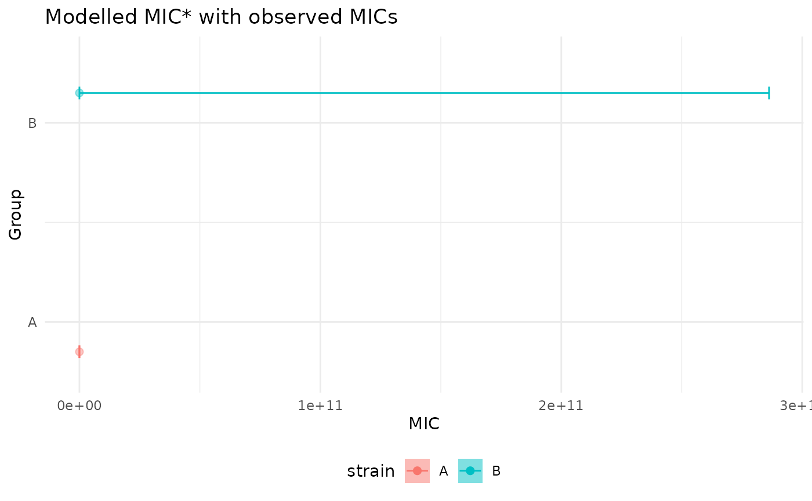

autoplot method for mic_solve objects
autoplot.mic_solve.RdQuick ggplot2 visualisations of the main outputs from
mic_solve(). Three panels are supported:
"mic" - forest plot of group-wise MIC estimates with asymmetric CIs.
"delta" - forest plot of deltaMIC pairwise differences.
"ratio" - forest plot of MIC ratios (log scale).
Usage
# S3 method for class 'mic_solve'
autoplot(
object,
type = c("mic", "delta", "ratio", "DoD_delta", "DoD_ratio"),
x = NULL,
color_by = NULL,
dot_size = 0.5,
...
)Arguments
- object
An object returned by
mic_solve().- type
One of
"mic","delta", or"ratio","DoD_delta", or"DoD_ratio".- x
Variable for x axis plotting
- color_by
Optional column name used to color and dodge replicate points. Default: first column in
newdata.- dot_size
Size of the dots in the dotplot. Default:
0.5.- ...
Additional arguments passed to
ggplot2::ggplot().
Examples
if (requireNamespace("ordinal", quietly = TRUE) &&
requireNamespace("ggplot2", quietly = TRUE)) {
df <- data.frame(score = ordered(sample(0:4, 120, TRUE)),
conc = runif(120, 0, 4),
strain = factor(sample(c("A","B"), 120, TRUE)))
fit <- ordinal::clm(score ~ strain * log1p(conc), data = df)
res <- mic_solve(fit, expand.grid(strain = levels(df$strain)),
conc_name = "conc")
ggplot2::autoplot(res, type = "mic")
}
#> Warning: NaNs produced
#> Warning: NaNs produced
